This article presents a couple examples of general workflows in R alone (without using the Shiny app), running through the various steps using the functions directly.
This gives you a bit more flexibility in how you explore and/or filter your data.
Note that we also show different ways of plotting the various datasets. Pick that which works best for you!
Let’s work through a couple of examples (note these examples are presented for illustration, but the shape files are not included in the package).
Example 1: Clinton Creek (Lidar)
Load a shape file defining the region of interest
creek_sf <- st_read("misc/data/Clinton_Creek.shp")Fetch Lidar DEM (this may take a while the first time)
creek_lidar <- dem_region(creek_sf)
#> Get Lidar data
#> Saving new tiles to cache directory: ~/.local/share/bcaquiferdata
#> Checking for matching tifs
#> Fetching bc_092p002_xli1m_utm10_2019.tif - skipping (new_only = TRUE)
#> Fetching bc_092p013_xli1m_utm10_2019.tif - skipping (new_only = TRUE)
#> Fetching bc_092p012_xli1m_utm10_2019.tif - skipping (new_only = TRUE)
#> Fetching bc_092i092_xli1m_utm10_2019.tif - skipping (new_only = TRUE)
#> Fetching bc_092p003_xli1m_utm10_2019.tif - skipping (new_only = TRUE)
#> Cropping DEM to regionPlot to double check
plot(creek_lidar)
#> downsample set to 44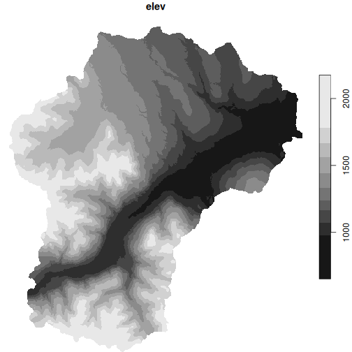
Collect wells in this region with added elevation from Lidar
creek_wells <- creek_sf |>
wells_subset() |> # Subset to region
wells_elev(creek_lidar) # Add Lidar
#> Subset wells
#> Fixing wells with a bottom lithology interval of zero thickness: 37685
#> Fixing wells where yield 0 should be NA: 4235, 44960, 57075, 57950, 75863
#> Add elevationPlot again to double check
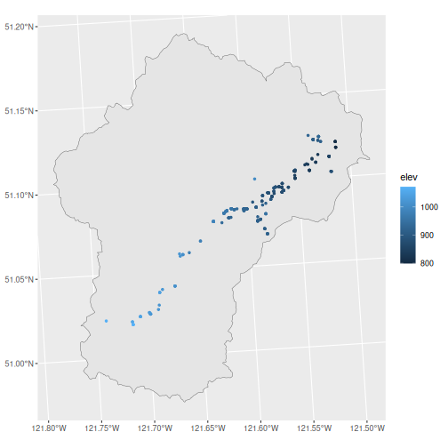
Export data for Strater, Voxler, and ArcHydro
wells_export(creek_wells, id = "clinton", type = "strater")
#> Writing Strater files ./clinton_strater_lith.csv, ./clinton_strater_collars.csv, ./clinton_strater_wls.csv
#> [1] "./clinton_strater_lith.csv" "./clinton_strater_collars.csv"
#> [3] "./clinton_strater_wls.csv"
wells_export(creek_wells, id = "clinton", type = "voxler")
#> Writing Voxler file ./clinton_voxler.csv
#> [1] "./clinton_voxler.csv"
wells_export(creek_wells, id = "clinton", type = "archydro")
#> Writing ArcHydro files ./clinton_archydro_well.csv, ./clinton_archydro_hguid.csv, ./clinton_archydro_bh.csv
#> [1] "./clinton_archydro_well.csv" "./clinton_archydro_hguid.csv"
#> [3] "./clinton_archydro_bh.csv"If we want to export the Lidar DEM file cropped to the watershed, we
can use write_stars(), but up until now we’ve been using
stars proxy objects, so doing this will take a long
time.
write_stars(creek_lidar, "clinton_lidar_dem.tif", progress = TRUE)A better option is to use dem_region() with the
out_file argument. This leverages
sf::gdal_utils() to use the local gdal software directly
which is much faster.
dem_region(creek_sf, out_file = "clinton_lidar_dem.tif")
#> Get Lidar data
#> Saving new tiles to cache directory: ~/.local/share/bcaquiferdata
#> Checking for matching tifs
#> Fetching bc_092p002_xli1m_utm10_2019.tif - skipping (new_only = TRUE)
#> Fetching bc_092p013_xli1m_utm10_2019.tif - skipping (new_only = TRUE)
#> Fetching bc_092p012_xli1m_utm10_2019.tif - skipping (new_only = TRUE)
#> Fetching bc_092i092_xli1m_utm10_2019.tif - skipping (new_only = TRUE)
#> Fetching bc_092p003_xli1m_utm10_2019.tif - skipping (new_only = TRUE)
#> Cropping DEM to region
#> Creating local dem 'clinton_lidar_dem.tif', this may take a while...
#> Saving region shape to temp...
#> Creating DEM...
#> DEM created: clinton_lidar_dem.tif
#> stars_proxy object with 1 attribute in 1 file(s):
#> $elev
#> [1] "clinton_lidar_dem.tif"
#>
#> dimension(s):
#> from to offset delta refsys point x/y
#> x 1 21366 585093 1 North_American_1983_CSRS_... FALSE [x]
#> y 1 24694 5672060 -1 North_American_1983_CSRS_... FALSE [y]Example 2: Mill Bay Watershed (TRIM)
Load a shape file defining the region of interest
mill_sf <- st_read("misc/data/MillBayWatershed.shp")We’ll check against some tiles
g <- ggplot() +
annotation_map_tile(type = "osm", zoomin = -1) +
geom_sf(data = mill_sf, fill = NA, linewidth = 1.5) +
labs(caption = "Data from OpenStreet Map")
g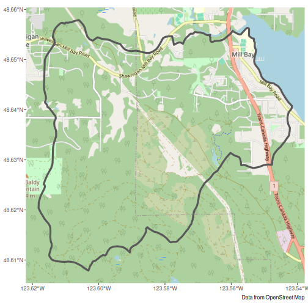
Fetch Lidar DEM (this may take a while the first time)
mill_lidar <- dem_region(mill_sf)
#> Get Lidar data
#> Saving new tiles to cache directory: ~/.local/share/bcaquiferdata
#> Checking for matching tifs
#> Fetching bc_092b063_xl1m_utm10_2019.tif - skipping (new_only = TRUE)
#> Fetching bc_092b062_xl1m_utm10_2019.tif - skipping (new_only = TRUE)
#> Cropping DEM to regionAdd to our plot to double check
mill_lidar_sf <- stars::st_downsample(mill_lidar, n = 12) |> # Downsample first
st_as_sf(as_points = FALSE, merge = TRUE) # Convert to polygons
#> for stars_proxy objects, downsampling only happens for dimensions x and y
g + geom_sf(data = mill_lidar_sf, aes(fill = elev), colour = NA)
#> Zoom: 13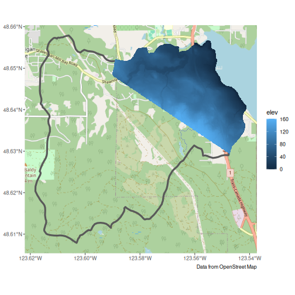
Looks like we don’t have elevation data for the whole region. This can be confirmed by checking the online LidarBC map
Let’s take a look our our options using TRIM data.
mill_trim <- dem_region(mill_sf, type = "trim")
#> Warning: `type` is deprecated, please use `source` instead
#> Get TRIM data
#> checking your existing tiles for mapsheet 92b are up to date
#> Cropping DEM to regionAdd to our plot to double check
mill_trim_sf <- mill_trim |>
st_as_sf(as_points = FALSE, merge = TRUE) # Convert to polygons
g + geom_sf(data = mill_trim_sf, aes(fill = elev), colour = NA)
#> Zoom: 13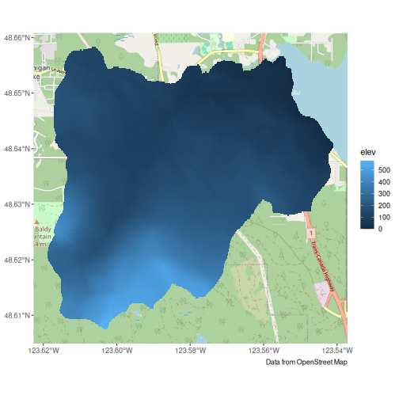
TRIM is at a coarser resolution, but covers our entire area. Let’s use it instead.
Collect wells in this region with added elevation from TRIM.
mill_wells <- mill_sf |>
wells_subset() |>
wells_elev(mill_trim)
#> Subset wells
#> Fixing wells with a bottom lithology interval of zero thickness: 8966, 29709, 36777, 37733, 48853, 48941, 55042, 56015, 56016, 68632, 69137, 69139, 69141, 75028, 75042, 84493, 84495, 84496, 84498, 84499, 84503, 84536
#> Fixing wells missing depth: 80040, 80041, 80043, 81555, 88357, 94353, 94356
#> Fixing wells where yield 0 should be NA: 8076, 8119, 8175, 8940, 8966, 14047, 14281, 21993, 29560, 29564, 29566, 29567, 35727, 36730, 36913, 36914, 36915, 53169, 54308, 55393, 64033, 75052, 80040, 80041, 80043
#> Add elevationPlot again to double check, see that we now elevation data for all wells.
g +
geom_sf(data = mill_wells, size = 1, aes(colour = elev)) +
scale_color_viridis_c(na.value = "red")
#> Zoom: 13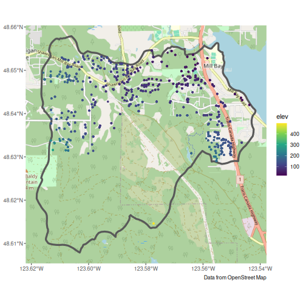
Export data for Strater, Voxler, and ArcHydro
wells_export(mill_wells, id = "mill", type = "strater")
#> Writing Strater files ./mill_strater_lith.csv, ./mill_strater_collars.csv, ./mill_strater_wls.csv
#> [1] "./mill_strater_lith.csv" "./mill_strater_collars.csv" "./mill_strater_wls.csv"
wells_export(mill_wells, id = "mill", type = "voxler")
#> Writing Voxler file ./mill_voxler.csv
#> [1] "./mill_voxler.csv"
wells_export(mill_wells, id = "mill", type = "archydro")
#> Writing ArcHydro files ./mill_archydro_well.csv, ./mill_archydro_hguid.csv, ./mill_archydro_bh.csv
#> [1] "./mill_archydro_well.csv" "./mill_archydro_hguid.csv" "./mill_archydro_bh.csv"As with Clinton Creek, if we want to export the TRIM DEM file cropped
to the watershed, we can use write_stars(), but up until
now we’ve been using stars proxy objects, so doing this could take a
long time.
write_stars(mill_trim, "mill_trim_dem.tif", progress = TRUE)A better option is to use dem_region() with the
out_file argument. This leverages
sf::gdal_utils() to use the local gdal software directly
which is much faster.
dem_region(mill_sf, out_file = "mill_trim_dem.tif")
#> Get Lidar data
#> Saving new tiles to cache directory: ~/.local/share/bcaquiferdata
#> Checking for matching tifs
#> Fetching bc_092b063_xl1m_utm10_2019.tif - skipping (new_only = TRUE)
#> Fetching bc_092b062_xl1m_utm10_2019.tif - skipping (new_only = TRUE)
#> Cropping DEM to region
#> Creating local dem 'mill_trim_dem.tif', this may take a while...
#> Saving region shape to temp...
#> Creating DEM...
#> DEM created: mill_trim_dem.tif
#> stars_proxy object with 1 attribute in 1 file(s):
#> $elev
#> [1] "mill_trim_dem.tif"
#>
#> dimension(s):
#> from to offset delta refsys point x/y
#> x 1 5742 454400 1 NAD83(CSRS) / UTM zone 10N FALSE [x]
#> y 1 5648 5389647 -1 NAD83(CSRS) / UTM zone 10N FALSE [y]Example 3: Koksilah Watershed (Combinations and Custom DEM)
Load a shape file defining the region of interest
koksilah_sf <- st_read("misc/data/Koksilah_watershed4/Koksilah_watershed4.shp")Fetch Lidar DEM (this may take a while the first time)
koksilah_lidar <- dem_region(koksilah_sf)
#> Get Lidar data
#> Saving new tiles to cache directory: ~/.local/share/bcaquiferdata
#> Checking for matching tifs
#> Fetching bc_092b063_xl1m_utm10_2019.tif - skipping (new_only = TRUE)
#> Fetching bc_092b062_xl1m_utm10_2019.tif - skipping (new_only = TRUE)
#> Fetching bc_092b073_xl1m_utm10_2019.tif - skipping (new_only = TRUE)
#> Fetching bc_092b072_xl1m_utm10_2019.tif - skipping (new_only = TRUE)
#> Fetching bc_092b071_xl1m_utm10_2019.tif - skipping (new_only = TRUE)
#> Cropping DEM to regionPlot to double check. Hmm, we only have some Lidar
plot(koksilah_lidar, reset = FALSE)
#> downsample set to 45
plot(
st_transform(koksilah_sf, crs = st_crs(koksilah_lidar)),
add = TRUE,
border = "red",
col = NA
)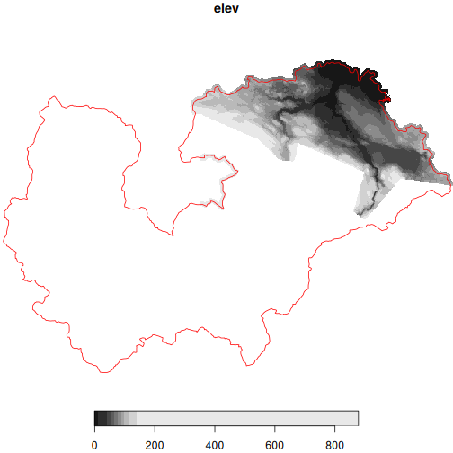
We could use TRIM instead.
koksilah_trim <- dem_region(koksilah_sf, source = "trim")
#> Get TRIM data
#> checking your existing tiles for mapsheet 92b are up to date
#> Cropping DEM to region
plot(koksilah_trim, reset = FALSE)
#> downsample set to 1
plot(
st_transform(koksilah_sf, crs = st_crs(koksilah_trim)),
add = TRUE,
border = "red",
col = NA
)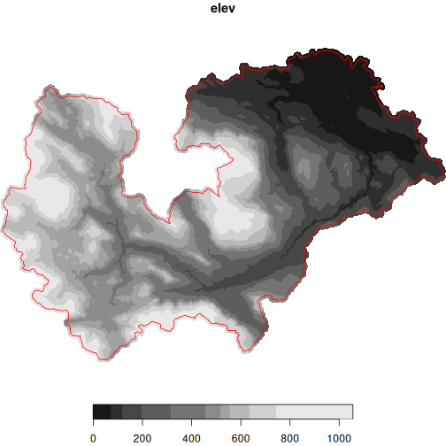
But the TRIM resolution is lower than Lidar.
We could also use Lidar where we have it and TRIM for the rest. But be careful! Combining different sources could result in artifacts unrelated to actual elevation differences and simply to methodology.
Here we’ll provide the TRIM DEM as dem_extra, so the
Lidar DEM takes priority.
koksilah_wells <- koksilah_sf |>
wells_subset() |> # Subset to region
wells_elev(dem = koksilah_lidar, dem_extra = koksilah_trim) # Add Lidar and TRIM
#> Subset wells
#> Fixing wells with a bottom lithology interval of zero thickness: 508, 510, 520, 898, 903, 1324, 4104, 8182, 14557, 14809, 16103, 17613, 19087, 22200, 24565, 24607, 24704, 24716, 26135, 26262, 26715, 28088, 28230, 29932, 29946, 31711, 32166, 33042, 33481, 35250, 39644, 41549, 42579, 42610, 42870, 42902, 43240, 43679, 43693, 43706, 43707, 44175, 44635, 44892, 45171, 47863, 48136, 48489, 48802, 48997, 51101, 51120, 51848, 52005, 52666, 53308, 53860, 54536, 54610, 54611, 55154, 55461, 55544, 55754, 55828, 55840, 56066, 56264, 63024, 63137, 63432, 63469, 63474, 63482, 63565, 63623, 63647, 63853, 63854, 63857, 63858, 64045, 64076, 64106, 64117, 64134, 64203, 65065, 65077, 68672, 68677, 68689, 68982, 68984, 68992, 69019, 69025, 69195, 69216, 69228, 74407, 74936, 75013, 75014, 75048, 80090, 84512, 84799, 85462, 86986, 88812, 96112, 96612, 100459, 104509, 108427, 110070, 113360, 113806, 117334, 117428, 117430, 118676, 119108, 120148, 121387, 128474, 130757, 134329
#> Fixing wells missing depth: 88360, 88478, 91273, 91275, 96303, 96307, 100813, 103048, 107303, 108625, 111962
#> Fixing wells where yield 0 should be NA: 518, 522, 903, 1324, 1724, 4054, 4056, 4061, 4066, 4072, 4073, 4087, 4098, 4103, 4104, 4109, 4110, 4116, 4126, 4130, 4137, 4139, 4169, 4185, 4187, 4196, 4208, 4219, 4227, 4230, 7454, 8929, 8977, 8979, 8982, 8984, 8985, 8986, 8991, 8995, 13830, 19325, 21535, 21596, 23415, 23725, 24502, 24549, 26134, 26135, 26519, 26584, 26587, 27151, 27259, 29401, 29550, 30430, 30431, 30432, 30455, 31709, 32449, 33342, 33367, 35880, 36960, 39341, 39404, 41549, 42429, 42431, 43231, 43728, 44012, 44174, 44176, 44178, 44293, 44309, 48237, 51120, 51240, 53193, 53194, 55146, 55147, 55189, 55516, 55679, 56217, 63059, 63427, 63452, 63516, 63565, 63983, 64005, 64009, 64010, 64045, 64057, 64098, 64114, 65006, 65064, 68694, 68695, 68797, 69013, 69019, 69210, 70902, 74586, 75014, 77082, 81870, 81908, 117559, 121933, 121934, 133785
#> Add elevation
#> Warning: Combining elevations measured through different techniques may introduce artifacts
#> into your measure of elevation. Use with caution.Plot to check elevations
ggplot() +
geom_sf(data = koksilah_sf) +
geom_sf(data = koksilah_wells, size = 1, aes(colour = elev))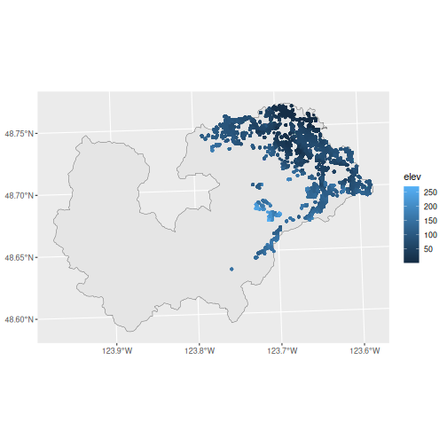
And finally, perhaps it’s best if we source our own, complete DEM file.
koksilah_custom <- dem_region(
koksilah_sf,
source = "misc/data/Koksilah_Watershed_DEM_2km_Buffer.tif"
)
#> Error:
#> ! `source` must be one of 'lidar', 'trim', or a path to local DEM
plot(koksilah_custom, reset = FALSE)
#> downsample set to 47
plot(
st_transform(koksilah_sf, crs = st_crs(koksilah_custom)),
add = TRUE,
border = "red",
col = NA
)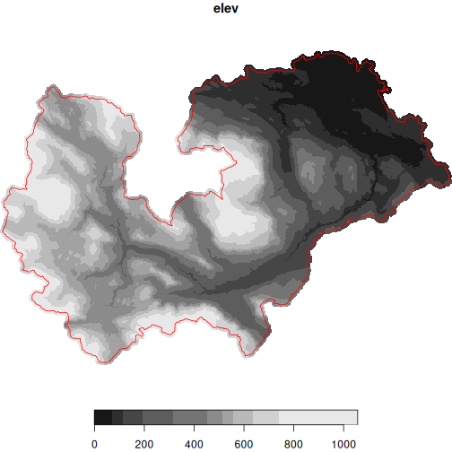
koksilah_wells <- koksilah_sf |>
wells_subset() |> # Subset to region
wells_elev(dem = koksilah_custom) # Add Custom DEM
#> Subset wells
#> Fixing wells with a bottom lithology interval of zero thickness: 508, 510, 520, 898, 903, 1324, 4104, 8182, 14557, 14809, 16103, 17613, 19087, 22200, 24565, 24607, 24704, 24716, 26135, 26262, 26715, 28088, 28230, 29932, 29946, 31711, 32166, 33042, 33481, 35250, 39644, 41549, 42579, 42610, 42870, 42902, 43240, 43679, 43693, 43706, 43707, 44175, 44635, 44892, 45171, 47863, 48136, 48489, 48802, 48997, 51101, 51120, 51848, 52005, 52666, 53308, 53860, 54536, 54610, 54611, 55154, 55461, 55544, 55754, 55828, 55840, 56066, 56264, 63024, 63137, 63432, 63469, 63474, 63482, 63565, 63623, 63647, 63853, 63854, 63857, 63858, 64045, 64076, 64106, 64117, 64134, 64203, 65065, 65077, 68672, 68677, 68689, 68982, 68984, 68992, 69019, 69025, 69195, 69216, 69228, 74407, 74936, 75013, 75014, 75048, 80090, 84512, 84799, 85462, 86986, 88812, 96112, 96612, 100459, 104509, 108427, 110070, 113360, 113806, 117334, 117428, 117430, 118676, 119108, 120148, 121387, 128474, 130757, 134329
#> Fixing wells missing depth: 88360, 88478, 91273, 91275, 96303, 96307, 100813, 103048, 107303, 108625, 111962
#> Fixing wells where yield 0 should be NA: 518, 522, 903, 1324, 1724, 4054, 4056, 4061, 4066, 4072, 4073, 4087, 4098, 4103, 4104, 4109, 4110, 4116, 4126, 4130, 4137, 4139, 4169, 4185, 4187, 4196, 4208, 4219, 4227, 4230, 7454, 8929, 8977, 8979, 8982, 8984, 8985, 8986, 8991, 8995, 13830, 19325, 21535, 21596, 23415, 23725, 24502, 24549, 26134, 26135, 26519, 26584, 26587, 27151, 27259, 29401, 29550, 30430, 30431, 30432, 30455, 31709, 32449, 33342, 33367, 35880, 36960, 39341, 39404, 41549, 42429, 42431, 43231, 43728, 44012, 44174, 44176, 44178, 44293, 44309, 48237, 51120, 51240, 53193, 53194, 55146, 55147, 55189, 55516, 55679, 56217, 63059, 63427, 63452, 63516, 63565, 63983, 64005, 64009, 64010, 64045, 64057, 64098, 64114, 65006, 65064, 68694, 68695, 68797, 69013, 69019, 69210, 70902, 74586, 75014, 77082, 81870, 81908, 117559, 121933, 121934, 133785
#> Add elevationPlot to check elevations
ggplot() +
geom_sf(data = koksilah_sf) +
geom_sf(data = koksilah_wells, size = 1, aes(colour = elev))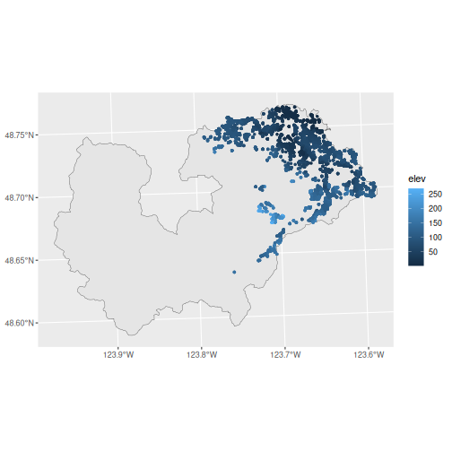
Export data for Strater, Voxler, and ArcHydro
wells_export(koksilah_wells, id = "koksilah", type = "strater")
#> Writing Strater files ./koksilah_strater_lith.csv, ./koksilah_strater_collars.csv, ./koksilah_strater_wls.csv
#> [1] "./koksilah_strater_lith.csv" "./koksilah_strater_collars.csv"
#> [3] "./koksilah_strater_wls.csv"
wells_export(koksilah_wells, id = "koksilah", type = "voxler")
#> Writing Voxler file ./koksilah_voxler.csv
#> [1] "./koksilah_voxler.csv"
wells_export(koksilah_wells, id = "koksilah", type = "archydro")
#> Writing ArcHydro files ./koksilah_archydro_well.csv, ./koksilah_archydro_hguid.csv, ./koksilah_archydro_bh.csv
#> [1] "./koksilah_archydro_well.csv" "./koksilah_archydro_hguid.csv"
#> [3] "./koksilah_archydro_bh.csv"If we want to export any of the DEM files cropped to the watershed,
we can use write_stars(), but up until now we’ve been using
stars proxy objects, so doing this will take a long
time.
write_stars(koksilah_lidar, "koksilah_lidar_dem.tif", progress = TRUE)
write_stars(koksilah_trim, "koksilah_trim_dem.tif", progress = TRUE)
write_stars(koksilah_custom, "koksilah_custom_dem.tif", progress = TRUE)A better option is to use dem_region() with the
out_file argument. This leverages
sf::gdal_utils() to use the local gdal software directly
which is much faster.
dem_region(koksilah_sf, out_file = "koksilah_lidar_dem.tif")
#> Get Lidar data
#> Saving new tiles to cache directory: ~/.local/share/bcaquiferdata
#> Checking for matching tifs
#> Fetching bc_092b063_xl1m_utm10_2019.tif - skipping (new_only = TRUE)
#> Fetching bc_092b062_xl1m_utm10_2019.tif - skipping (new_only = TRUE)
#> Fetching bc_092b073_xl1m_utm10_2019.tif - skipping (new_only = TRUE)
#> Fetching bc_092b072_xl1m_utm10_2019.tif - skipping (new_only = TRUE)
#> Fetching bc_092b071_xl1m_utm10_2019.tif - skipping (new_only = TRUE)
#> Cropping DEM to region
#> Creating local dem 'koksilah_lidar_dem.tif', this may take a while...
#> Saving region shape to temp...
#> Creating DEM...
#> DEM created: koksilah_lidar_dem.tif
#> stars_proxy object with 1 attribute in 1 file(s):
#> $elev
#> [1] "koksilah_lidar_dem.tif"
#>
#> dimension(s):
#> from to offset delta refsys point x/y
#> x 1 29072 428186 1 NAD83(CSRS) / UTM zone 10N FALSE [x]
#> y 1 20273 5402119 -1 NAD83(CSRS) / UTM zone 10N FALSE [y]
dem_region(koksilah_sf, out_file = "koksilah_trim_dem.tif")
#> Get Lidar data
#> Saving new tiles to cache directory: ~/.local/share/bcaquiferdata
#> Checking for matching tifs
#> Fetching bc_092b063_xl1m_utm10_2019.tif - skipping (new_only = TRUE)
#> Fetching bc_092b062_xl1m_utm10_2019.tif - skipping (new_only = TRUE)
#> Fetching bc_092b073_xl1m_utm10_2019.tif - skipping (new_only = TRUE)
#> Fetching bc_092b072_xl1m_utm10_2019.tif - skipping (new_only = TRUE)
#> Fetching bc_092b071_xl1m_utm10_2019.tif - skipping (new_only = TRUE)
#> Cropping DEM to region
#> Creating local dem 'koksilah_trim_dem.tif', this may take a while...
#> Saving region shape to temp...
#> Creating DEM...
#> DEM created: koksilah_trim_dem.tif
#> stars_proxy object with 1 attribute in 1 file(s):
#> $elev
#> [1] "koksilah_trim_dem.tif"
#>
#> dimension(s):
#> from to offset delta refsys point x/y
#> x 1 29072 428186 1 NAD83(CSRS) / UTM zone 10N FALSE [x]
#> y 1 20273 5402119 -1 NAD83(CSRS) / UTM zone 10N FALSE [y]
dem_region(koksilah_sf, out_file = "koksilah_custom_dem.tif")
#> Get Lidar data
#> Saving new tiles to cache directory: ~/.local/share/bcaquiferdata
#> Checking for matching tifs
#> Fetching bc_092b063_xl1m_utm10_2019.tif - skipping (new_only = TRUE)
#> Fetching bc_092b062_xl1m_utm10_2019.tif - skipping (new_only = TRUE)
#> Fetching bc_092b073_xl1m_utm10_2019.tif - skipping (new_only = TRUE)
#> Fetching bc_092b072_xl1m_utm10_2019.tif - skipping (new_only = TRUE)
#> Fetching bc_092b071_xl1m_utm10_2019.tif - skipping (new_only = TRUE)
#> Cropping DEM to region
#> Creating local dem 'koksilah_custom_dem.tif', this may take a while...
#> Saving region shape to temp...
#> Creating DEM...
#> DEM created: koksilah_custom_dem.tif
#> stars_proxy object with 1 attribute in 1 file(s):
#> $elev
#> [1] "koksilah_custom_dem.tif"
#>
#> dimension(s):
#> from to offset delta refsys point x/y
#> x 1 29072 428186 1 NAD83(CSRS) / UTM zone 10N FALSE [x]
#> y 1 20273 5402119 -1 NAD83(CSRS) / UTM zone 10N FALSE [y]Extra tools
Load cleaned data (will fetch if doesn’t already exist)
wells_lith <- data_read("lithology")Explore the lithology standardization performed by bcaquiferdata
lith_std <- wells_lith |>
select(well_tag_number, contains("lith")) |>
arrange(!is.na(lithology_category))
lith_std
#> # A tibble: 637,624 × 23
#> well_tag_number lithology_from_ft_bgl lithology_to_ft_bgl lithology_raw_data
#> <dbl> <dbl> <dbl> <chr>
#> 1 11 164 187 "red ash"
#> 2 13 1 120 "\""
#> 3 49 0 15 ""
#> 4 62 0 0 "backfilled to 217 foot deep wel…
#> 5 73 25 170 "delimite w/copper ore"
#> 6 73 190 380 "copper ore w/delimite"
#> 7 88 0 65 ""
#> 8 98 0 15 ""
#> 9 105 0 15 ""
#> 10 163 200 210 "gray,clean a little coarser"
#> # ℹ 637,614 more rows
#> # ℹ 19 more variables: lithology_description_code <chr>, lithology_material_code <chr>,
#> # lithology_hardness_code <chr>, lithology_colour_code <chr>, lithology_observation <chr>,
#> # lithology_from_m <dbl>, lithology_to_m <dbl>, lithology_raw_combined <chr>, lith_n <int>,
#> # lith_rec <int>, flag_lith_nodepths <lgl>, flag_lith_overruns <lgl>,
#> # flag_lith_intervals <lgl>, lithology_clean <chr>, lith_primary <chr>,
#> # lith_secondary <chr>, lith_tertiary <chr>, lithology_extra <chr>, …Save it to peruse later
write_csv(lith_std, "lith_categorization.csv")